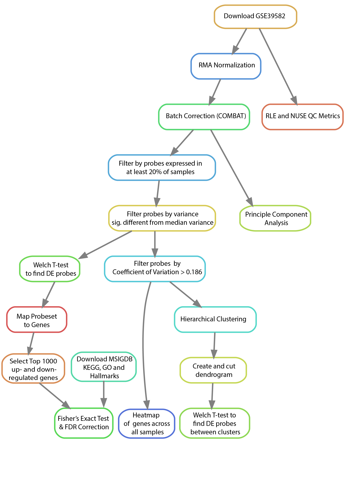

Project 1: Microarray Based Tumor Classification
Microarray technologies allow scientists to quickly and accurately profile the expression of tens of thousands of genes at a time at a fraction of the cost of modern day sequencing protocols. Repositories and databases such as the Gene Expression Omnibus (GEO) are home to tens of thousands of published and unpublished microarray experiments, and millions of individual samples. Microarray gene expression data are useful in a broad range of research tasks, including disease diagnosis, drug discovery, and toxicological research. Several companies have been born out of the application of this technology to disease prediction such as the Oncotype Dx colon, breast, and prostate cancer prediction assays or Agendia’s MammaPrint breast cancer test. With such a tremendous amount of publicly available data and the translational impact of modern microarray analyses, it is essential that every bioinformatics researcher possess the knowledge and skill set to understand, analyze, and interpret these data. This project will give you first-hand experience in acquiring and analyzing a public microarray dataset.
This analysis will focus only on reproducing the results from the comparison of the C3 and C4 tumor subtypes. The study was conducted in a two-phase design, where an initial set of “discovery” samples was used to identify patterns among the samples, and a separate set of “validation” samples was used to test if the results from the discovery set were robust. For this analysis, we have combined the discover and validation set samples into a single dataset that you will use. There are 134 samples in total.
Upon the completion of project 1, students will be able to do the following:
- Read and understand the detailed computational methods of a relevant microarray analysis paper.
- Navigate the Gene Expression Omnibus (GEO) database and download publicly available microarray data.
- Upload data to a remote server (SCC).
- Compose and document original scripts using the R programming language.
- Normalize and quality control a large dataset of microarray samples.
- Employ noise filtering techniques to reduce data dimensionality.
- Perform data-driven analyses, such as hierarchical clustering, to discover novel relationships among samples in a given dataset.
Contents:
- 1. Read the paper and supplemental methods and familiarize yourself with the workflow diagram
- 2. Data acquisition & transfer to remote server
- 3. Data preprocessing & quality control
- 4. Noise filtering & dimensionality reduction
- 5. Hierarchical clustering & subtype discovery
- 6. In-depth Analysis
- 7. Discuss Your Findings
- Assignment Writeup
1. Read the paper and supplemental methods and familiarize yourself with the workflow diagram
Everyone
Below you will see an example of a conceptual workflow diagram. These are common figures found in presentations and publications that very concisely and intuitively illustrate the required steps undertaken in the described analysis to produce the reported findings. Their intent is to allow others to quickly view and determine the appropriateness of the chosen methodology and assumptions underlying the analysis. They are also useful, in conjunction with the written methods sections, in facilitating the reproducibility of the study by providing a complete representation of the major steps and their dependencies in an easy to understand format.

You will notice that not every step described in each section is included in the workflow diagram. For example, you’ll observe that we have left off a few steps from the data curator’s section including the generation of symbolic links and the directory structure as these steps have no impact on the actual results of the analysis. There are other reasonable ways to setup the data and directory structure that will vary from individual to individual without affecting the actual results. Notice, however, that we have left such steps as the Coefficient of Variation filtering and median variance filtering as these are crucial steps that greatly impact the downstream results.
It might be helpful when you are first starting to individually make diagrams that include all of the steps for your role in order to understand the process you will be following (even the non-necessary steps). Then, when you are working in a group to combine them, you can come to a consensus as to which steps are superfluous for the sake of reproducing the results and which are essential.
Please note that there is an inherent level of subjectivity in the generation of these diagrams. We are not looking for any one specific diagram / diagram structure. We only care that you represent the major steps of the analysis and that you connect them in a way that illustrates the order in which they must be performed. Our intent with the generation of these diagrams is to help you visualize and understand all of the key steps that go into a particular analysis and how your role connects and depends on the others.
For this first project, you do not need to make a workflow diagram. Simply read this section and familiarize yourself with how they visually represent the steps of an analysis and their dependencies. For the subsequent projects, as a group, you will make a single workflow diagram that summarizes the entire analysis you perform for those projects.
2. Data acquisition & transfer to remote server
Lead Role: Data Curator
Create a directory for your group under the following path:
/projectnb/bf528/users/For example, you might create the directory group_1:
mkdir /projectnb/bf528/users/group_1Then create a directory for this project under that directory:
mkdir /projectnb/bf528/users/group_1/project_1Create directories under this directory for use in this project, and follow
this pattern for subsequent projects.This study is fairly large. To prevent the
download and storage of multiple copies of this dataset, we have downloaded all
but one of the samples and have deposited them in a central location on SCC
(/project/bf528/project_1/data/GSE39582/CEL_files). Your task will be to
download the missing sample (sample ID: GSM971958) and to upload it to your
samples directory. There are two popular approaches to getting files onto a
remote server. You can download the file to your personal computer and upload
it using an SFTP client of your choosing, or you can utilize the wget
utility on SCC to download the file directly to the file system.
- Locate the paper’s repository on GEO by searching for accession number GSE39582.
- Identify the sample GSM971958 and download the .CEL.gz file to your SCC directory.
- Since we are using relative paths in our analysis code to maintain
portability, we would like to have all CEL files available in our
samplesdirectory. However, we also would like to avoid having duplicates of files on our system as this is a waste of resources. We can make use of symbolic links to make a file appear to exist in a directory with the commandln -s <source> <dest>. Use theln -scommand to create symbolic links of all of the other CEL files from the location above into yoursamplesdirectory. Hint: thelncommand can accept multiple<source>arguments when<dest>is a directory. This will create a symbolic link for every file in<source>in the<dest>directory.
3. Data preprocessing & quality control
Lead Role: Programmer
Normalization of microarray data is necessary to ensure that differences in intensities read by the scanner are due to differential gene expression and not due to printing, hybridization, or scanning artifacts. Several methods exist for normalizing microarray samples together. Many include quantile normalization, log-median centering, or the use of control genes. Fortunately for us, there are many researchers who devote their time to making tasks such as this as easy and straightforward as possible. Here, you will need to write an R script to normalize all of the microarrays together using the Robust Multiarray Averaging (RMA) algorithm. Then, you will compute standard quality control metrics on your normalized data and visualize the distribution of samples using Principal Component Analysis (PCA).
-
There are two major repositories we will be leveraging during this course: CRAN and Bioconductor. As mentioned before, to download packages from CRAN, issue the command
install.packages("packageNameHere")from within your R session. To install packages from Bioconductor, its necessary to first source the biocLite function on the Bioconductor servers:if (!require("BiocManager", quietly = TRUE)) install.packages("BiocManager") BiocManager::install(version = "3.14")Once this function has been sourced, you can use the command
BiocManager::install("packageNameHere")to automatically download any Bioconductor package. For this assignment, you will need theaffy,affyPLM,sva,AnnotationDbi, andhgu133plus2.dbpackages located in Bioconductor. Download and install these packages to SCC. For this assignment, we will be working in R. Issue the following commands to load the R module and install your packages. When prompted with ayes or no [y/n], respond with yes::module load R R --vanilla if (!require("BiocManager", quietly = TRUE)) install.packages("BiocManager") BiocManager::install(version = "3.14") BiocManager::install(c("affy","affyPLM","sva","AnnotationDbi","hgu133plus2.db")) Once installed, confirm that you can load each of these packages by opening a new R session and typing
library(packageNameHere). These commands should execute without error.Read in the CEL files using the
ReadAffy()function, then use therma()function to normalize all of the CEL files together. If you are running into trouble here, try issuing the commands?ReadAffyor?rmawithin your R session. This will bring up the help files for these functions. For further help, check out the affy vignette for a detailed walkthrough of the normalization process.Using the Bioconductor package
affyPLM, compute Relative Log Expression (RLE) and Normalized Unscaled Standard Error (NUSE) scores of the microarray samples. You will need to provide the output of yourReadAffy()call (not fromrma()) from 3.3 with thefitPLMfunction, and providenormalize=TRUEandbackground=TRUEas additional arguments. Summarize these data by computing the median RLE and NUSE for each sample, then examine the distribution of the medians by plotting them in a histogram.Use
ComBat(svapackage) to correct for batch effects. We have provided an annotation file for you which contains a host of clinical and batching annotation used by the authors for their analysis. This file can be found on SCC (/project/bf528/project_1/doc/proj_metadata.csv). Batch effects include both Center and RNA extraction method and have been merged into a single variable callednormalizationcombatbatchin the annotation file. Features of interest include both tumor and MMR status as per Marisa et. al. and have been merged into a single variable callednormalizationcombatmod. Use these two variables when running ComBat to correct for batch effects while preserving features of interest. Write out the expression data to a CSV file using theexprsandwrite.csvfunctions, where probesets are rows and samples are columns.Perform Principal Component Analysis (PCA) on your normalized data using the
prcomp()function. It is important to center and scale your data when performing PCA. To do so, use thescale()function. Note that scaling and centering is done within each column. Given that we want to scale within each gene rather than within each sample, you will have to transpose your expression matrix prior to scaling then re-transpose it to return to it to its original orientation. Since you will have already scaled your data, set the variables scale and center in theprcompfunction equal toFALSE. Once you have run prcomp, you can view the values for each of the principal components by accessing the$rotationattribute of your prcomp object.Plot PC1 vs PC2 and examine the plot for outliers. You can examine the percent variability explained by each principal component by looking at the
$importanceattribute.
Deliverables:
- comma separated file containing the RMA normalized, ComBat adjusted gene expression values
- a histogram of median RLE scores
- a histogram of median NUSE scores
- a plot of PC1 vs PC2 with the percent variability attributed to these principal components shown on the x and y axes labels.
In your writeup, provide an interpretation of each of these plots.
4. Noise filtering & dimensionality reduction
Lead Role: Analyst
To help you get started writing your code, we have provided gene expression data similar to the form you should obtain in 3.5. You will find a differential expression result matrix here:
/project/bf528/project_1/data/example_intensity_data.csvMicroarray analysis is always characterized by the so-called “large p, small n” problem in which the number of features (p, e.g. genes) far exceeds the number of samples (n, e.g. patients). Univariate statistical methods, such as the t-test, are unaffected by the ratio of features to samples. However, certain multivariate methods, such as clustering, will yield little or no information when performed in scenarios where \(p \gg n\) due to the low signal-to-noise ratio. There are many basic methods that can be used to remove this noise. Not all methods are appropriate for every situation, and the choice of which methods to use and which cutoffs to select must be carefully considered. Marisa et al. selected genes (probe sets) based on three well defined metrics. Compute these metrics for your normalized data and use the cutoffs suggested to arrive at a reduced set of features as described in the supplemental methods of the paper.
Implement the following filters on the RMA normalized, ComBat adjusted expression matrix:
- Expressed in at least 20% of samples (i.e. for each gene, at least 20% of the gene-expression values must be > \(\log2(15)\)).
- Have a variance significantly different from the median variance of all
probe sets using a threshold of \(p<0.01\) (hint: use a chi-squared test
as shown in http://www.itl.nist.gov/div898/handbook/eda/section3/eda358.htm.
You will need to manually compute the test statistic for each gene and
compare it to the chi-squared distribution with the correct number of
degrees of freedom using the
qchisq()function). - Have a coefficient of variation > 0.186.
- Write out a different file containing the gene expression matrix for genes passing all three of the filters from 4.1, 4.2, and 4.3.
-
For groups with Biologist role only: Write out the expression matrix for
probesets that pass the expression threshold from 4.2 to a file with
write.csv.
Deliverables:
- A comma separated file with the filtered results from all three filters from 4.4.
- Report the number of genes that pass all of these thresholds.
- For groups with Biologist role only: A comma separated file with the filtered results from the expression filter from 4.2.
5. Hierarchical clustering & subtype discovery
Lead Role: Analyst
A powerful analytical tool to leverage with large sample sizes is clustering. Clustering is an unsupervised method for grouping sets of similar objects based on some criterion, usually a series of features whose similarity is defined by some distance function. Cluster analysis is powerful because it doesn’t rely on a class label (such as disease status), allowing for novel relationships to be discovered. In this paper, Marisa et al. leveraged a method called Consensus Clustering to identify the true number of clusters present in their data. This method is too computationally intensive for the purposes of this course, so we will use hierarchical clustering instead.
- Perform hierarchical clustering on your fully filtered data matrix from Part 4.4. Be sure to check that you are clustering the patients and not the genes.
- Cut the dendrogram such that the samples are divided into 2 clusters. How many samples are in each cluster?
- Create a heatmap of the gene-expression of each gene across all samples
using the
heatmap()function. Include a column colorbar by setting theColSideColorsvariable in the heatmap function equal to “red” if the sample belongs to the C3 subtype and “blue” otherwise. Subtype annotation can be found in the annotation matrix under the titlecit-coloncancermolecularsubtype. - Using the expression matrix from Part 4.4 and the cluster memberships from
Part 5.2, identify genes differentially expressed between the two clusters
using a Welch t-test (results in a ranked list). Write out a dataframe
containing the probeset ID, t-statistic, p-value, and adjusted p-value (i.e.
FDR, see the
p.adjustfunction) to a comma separated file. How many genes are differentially expressed at adjusted :math:p<0.05between the clusters for both lists? - Select the most differentially expressed genes that you feel best define the clusters and explain your selection.
- For groups with Biologist role only: perform the t-test analysis described in 5.4 on the expression matrix from 4.5 as well and provide to the Biologist as a csv file.
Deliverables:
- report the number of samples in each cluster from Part 5.2
- a heatmap of the genes and samples with a color bar indicating which subtype each sample belongs to
- report the number of differentially expressed genes at :math:
p<0.05between the two clusters - a comma separated file containing the results of the Welch t-test for all genes irrespective of significance for each subtype comparison
- report a list of the genes you feel best represent each cluster and explain how you came to your conclusion
- For groups with Biologist role only: A comma separated file with the t-test results computed on the expression matrix from 4.5.
6. In-depth Analysis
Primary role: Biologist - for 4 person groups only
The authors in Marisa et al sought to understand the biological significance of the different gene expression profiles for each tumor subtype using gene set enrichment analysis. Specifically, KEGG, GO, and cancer hallmark genesets were compared with the top 1000 up- and down-regulated genes of each subtype compared with all the others using Fisher’s Exact test. We will try to reproduce this analysis using KEGG gene sets and the differential expression results from 5.6.
To help you get started writing your code, we have provided gene expression statistics similar to the form you should obtain in 5.6. You will find a differential expression result matrix here:
/project/bf528/project_1/data/differential_expression_results.csvThe differential expression matrix you received has only probeset IDs, and not gene symbols. Using the
select()function of the bioconductor packagehgu133plus2.db, map the probeset IDs to gene symbols by specifying the appropriatekeyandcolumnarguments. Some probeset IDs map to the same gene symbol, so reason about and pick a rationale for choosing which probeset ID to use as representative. Add an additional column to the differential expression results that contains one symbol for each probeset ID.Locate and download the KEGG, GO, and Hallmark gene sets from MSigDB. You will need to supply your email address to download the gene sets. Download the file with gene symbol identifiers, and not entrez IDs. You should have three files with
.gmtextensions that contain the genesets.Using the differential expression results from your comparisons in 5.6 that were calculated using the Chi-squared filtered results from 4.5, select the top 1000 up- and down-regulated (i.e. positive and negative log2 fold change, respectively) genes, irrespective of significance. Create a table in your report with the top 10 of these up- and down-regulated genes, including t-statistic, p-value, and adjusted p-value. NB: You should have around ~20k genes listed in the differential expression results from 5.6.
We will use the GSEABase bioconductor package to load the genesets we downloaded as a GeneSetCollection. Read the package documentation to understand how to use the package, and find the function that is used to read in GMT formatted files. You may also find our chapter on gene set enrichment analysis from our course R for Biological Sciences helpful. How many gene sets are there in each of the collections we are using?
-
Use the
fisher.testfunction to compute hypergeometric statistics and p-values comparing overlap for each gene set and each of the top 1000 increased and 1000 decreased genes from 6.3. You will have two sets of enrichment statistics, one for each direction of effect.To implement your test, you might consider writing a function that accepts a set of differentially expressed gene symbols and a single gene set to test your code. You will need to create a contingency table for each calculation to pass as the argument to
fisher.test, e.g.:Differentially Expressed Not Differentially Expressed Total In Gene Set 26 100 126 Not In Gene Set 974 18259 19233 Total 1000 18359 19359 NB: These numbers are completely made up. You should use the total number of genes in the differential expression results as the number of all genes.
To perform Fisher’s Exact test on the above matrix, you could write:
> fisher.test(matrix(c(26,974,100,18259),nrow=2)) Fisher's Exact Test for Count Data data: matrix(c(26, 974, 100, 18259), nrow = 2) p-value = 1.119e-09 alternative hypothesis: true odds ratio is not equal to 1 95 percent confidence interval: 3.022027 7.606742 sample estimates: odds ratio 4.873775 Create a table (dataframe) of statistics for each comparison from 6.2, including gene set name, statistic estimate and p-value. Adjust the p-values for multiple hypotheses using the Benjamini-Hochberg (FDR) procedure and append this adjusted p-value column to the data frame. Finally, sort each dataframe by nominal p-value and report the top three results for each in a table in your report. Compare the enriched gene sets you found with those reported in Figure 2 of the paper.
Deliverables:
- a table containing top 10 up- and down-regulated probesets with gene symbol, t-statistic, nominal p-value, and adjusted p-value columns
- a description of the gene set databases used, specifying the number of gene sets considered in each
- the number of significantly enriched gene sets at adjusted :math:
p<0.05 - a table containing the top 3 enriched gene sets for each geneset type
7. Discuss Your Findings
Discuss your findings with your team members and other teams. Some interesting questions to consider:
- If you found a different number of probesets passing the filtering thresholds in Part 4, why do you think this is and is this a problem? Does it change how you would interpret the results?
- Which aspects of your analysis, if changed, would have the biggest impact on your results?
- Part 4.2 requires to you to find only genes with variance significantly higher than the median variance. Why do you think it is important to consider genes with high variance? What information might these gene provide?
- What biological interpretation may the genes found in Part 4.3 have?
Assignment Writeup
Refer to the Project Writeup Instructions.